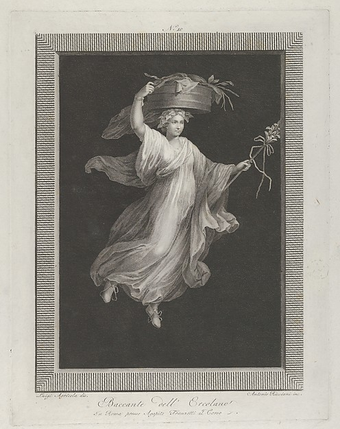

She is looking right and a little down, at something the engraver did not engrave. She has carried that basket for two hundred years and has not once looked at it.
Whatever it is, it is in the black, and it is not coming closer.